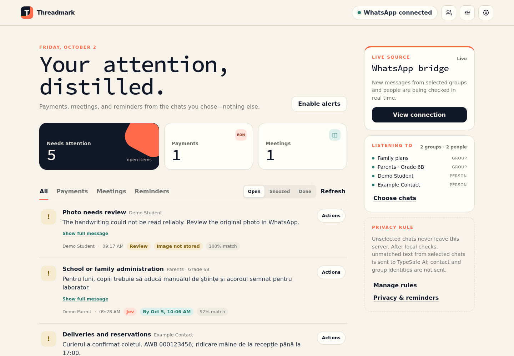
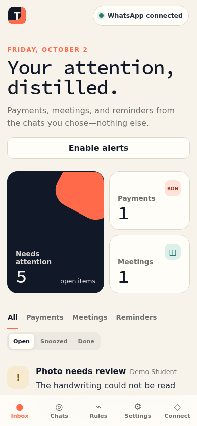
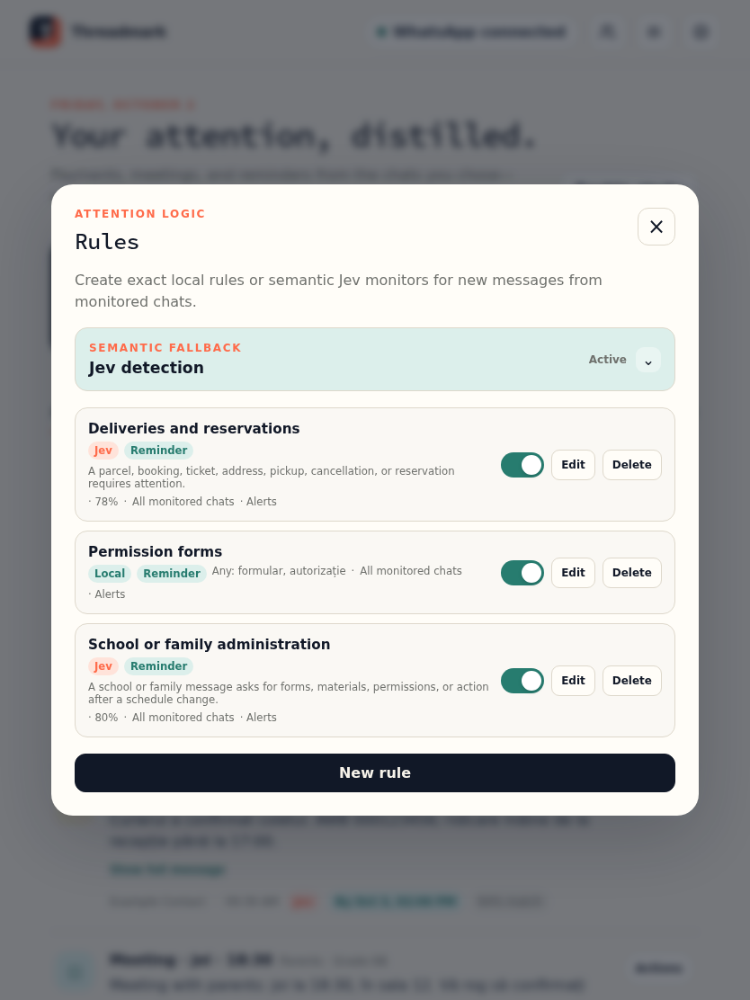
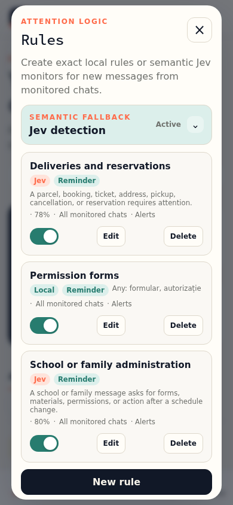
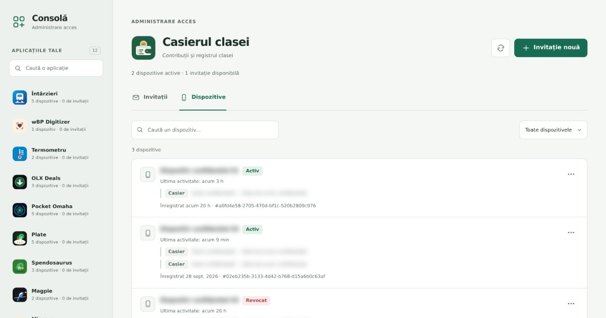

Herramientas cotidianas
Casierul clasei
Lleve en orden el fondo de una clase: quién ha pagado, qué se debe y adónde fue el dinero.
Convierte los grupos de WhatsApp más activos en una lista corta de lo que te necesita: pagos, reuniones y plazos.
Threadmark es autoalojado: cada persona ejecuta su propia copia privada.

Threadmark es una bandeja de atención privada para los grupos y personas de WhatsApp que elijas. Lee los mensajes nuevos a medida que llegan, saca los pagos, las reuniones, los plazos y cualquier otra cosa que le pidas vigilar, y solo te muestra eso. Todo lo demás se queda en WhatsApp.
Se conecta como dispositivo vinculado, igual que WhatsApp Web, y por diseño solo lee: nunca envía mensajes, nunca marca los chats como leídos, nunca te muestra en línea y nunca lee el historial antiguo. La conexión no es oficial, así que WhatsApp podría cambiarla o restringir una cuenta que la use.
Cada grupo y cada persona están desactivados hasta que los actives. Los mensajes de otros chats se descartan antes de revisarse o guardarse, y los mensajes seleccionados que no coinciden con nada no se conservan.
Los chats de estas capturas son inventados.



Threadmark tiene dos partes, cada una en su propio contenedor de Podman sin root. Un puente mantiene la conexión con WhatsApp mediante la biblioteca Baileys y guarda cada mensaje en una cola hasta que la aplicación lo recibe. La aplicación funciona con Node.js 24 y su SQLite integrado, y envía actualizaciones en directo al navegador mediante server-sent events y Web Push. El puente no abre ningún puerto al exterior. El acceso es por invitación, gestionada desde PWA Invite Console, y la aplicación se actualiza sola con pwa-kit. Los mensajes llegan a la aplicación en un formato neutro, así que más adelante podrían añadirse otras fuentes, como Telegram o el correo electrónico. El proyecto es de código abierto con licencia GPL-3.0.
Lleve en orden el fondo de una clase: quién ha pagado, qué se debe y adónde fue el dinero.

Una pequeña consola para gestionar invitaciones y dispositivos en aplicaciones web privadas.

Una pequeña pieza que ayuda a las aplicaciones web a funcionar sin conexión y mantenerse actualizadas.